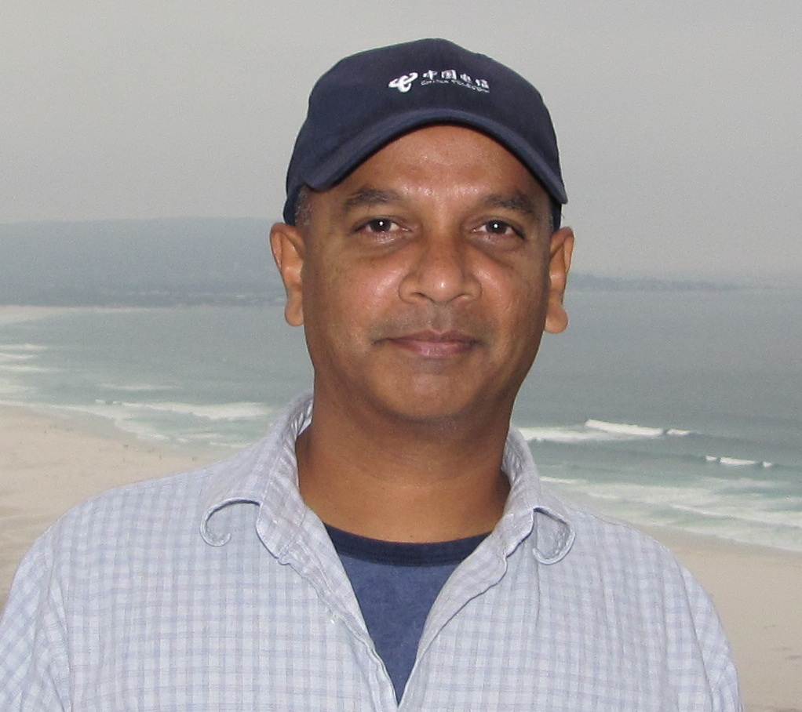

Our Team

Patrick Hosein
Patrick Hosein
TTMAG Chairman from TTNIC
Patrick attended the Massachusetts Institute of Technology (MIT) where he obtained five degrees including a...
Cintra Sooknanan
TTMAG Secretary
Cintra Sooknanan is an accomplished Attorney at Law in the Republic of Trinidad and Tobago...
Sanjay Bahadoorsingh
Academic Community Representative from UWI
Sanjay Bahadoorsingh was born in Port of...
Dev Gosine
Civil Society Representative from the Rotary Club
Tracy Hackshaw
Technical Community Representative from ISOCTT
Mr. Tracy F. Hackshaw is founding Vice Chair of the Internet Society Trinidad & Tobago Chapter...
Rabindra Jaggernauth
Business Community Representative from TTCSI
Mr. Rabindra Jaggernauth is an IT and and Management Consultant. He was the CEO of...
Dev Anand Teelucksingh
Technical Community Representative from TTCS
Dev Anand has been tinkering with computers since the Commodore...
Jacqueline Morris
Academic Community Representative from UTT
Jacqueline A. Morris lives and works in Trinidad and Tobago. In addition...